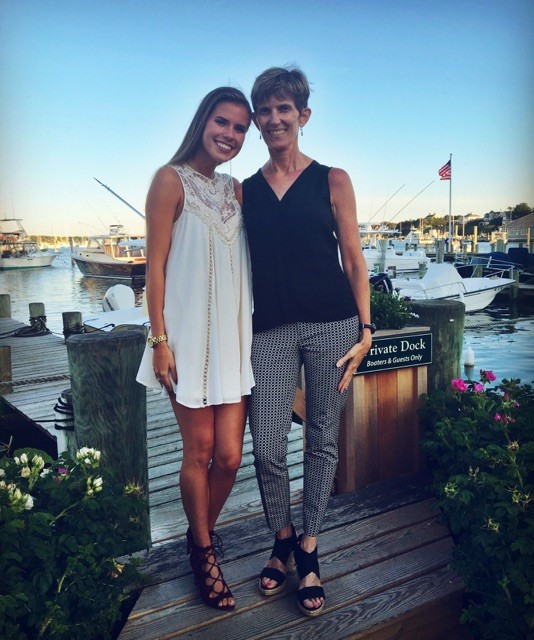
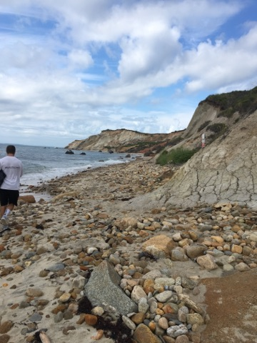
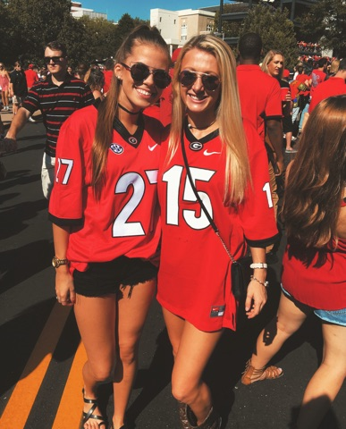
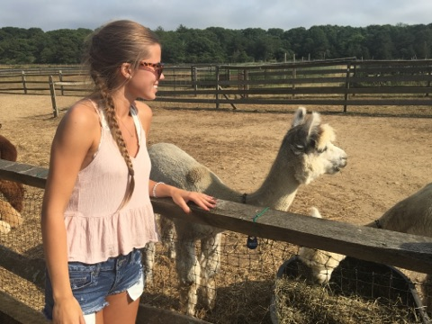
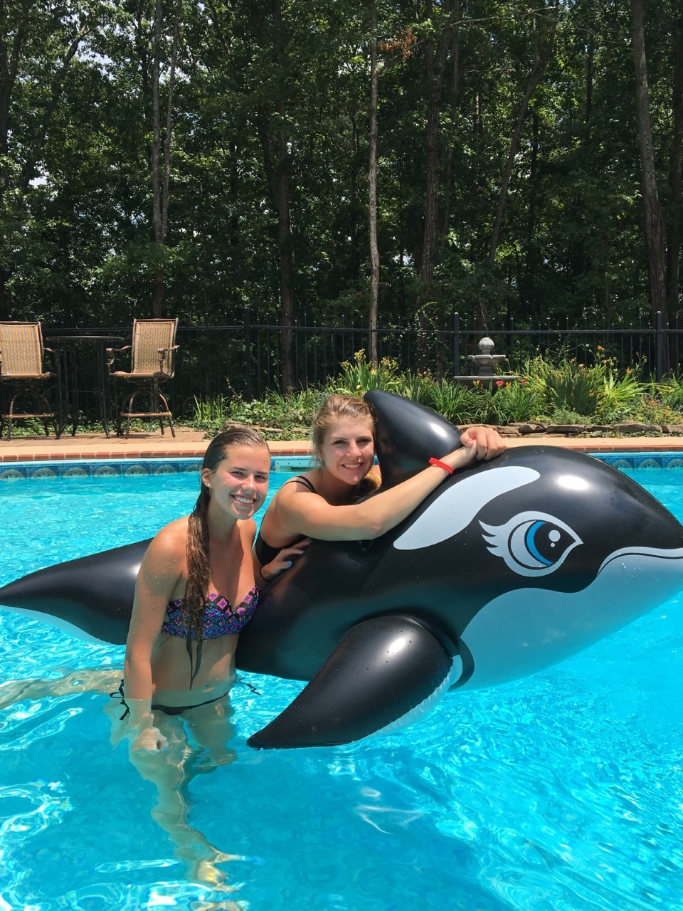
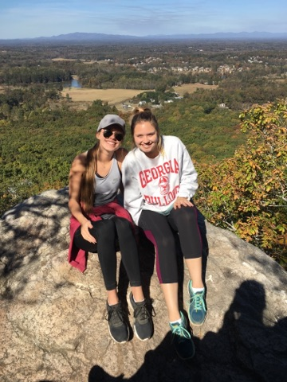
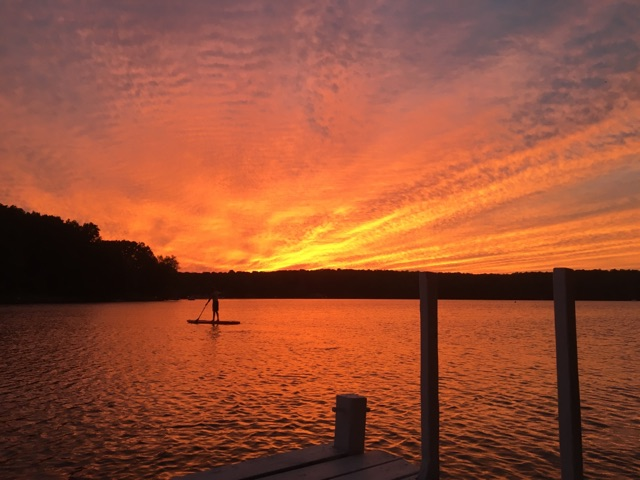

Hi, visitors! My name is Grace Mrosek, and as a student in Computer Science 1100, I have the opportunity to present to you this wonderful, personalized web page :) One area of the Internet that I enjoy using is different forms of social media. It allows me to express my opinions as well as display my creative side through a public platform. Below you'll find several links to my favorite social media websites!
| VSCO | |||
|---|---|---|---|
| twitter.com/gracemrosek87 | instagram.com/gracemrosek | facebook.com/grace.mrosek | vsco.co/grace-elaine |
Another great way to get to know me is through how I spend my time and who I spend it with. I most enjoy being with my family and close friends, and I love to travel, go outdoors, and make lasting memories! Here are a few pictures of things I've done and places I've been this year.
      
This may only be a glance into my nineteen-year life, however technology and the Internet have allowed me to create, document, and remember valuable memories that I hope to cherish for years to come!